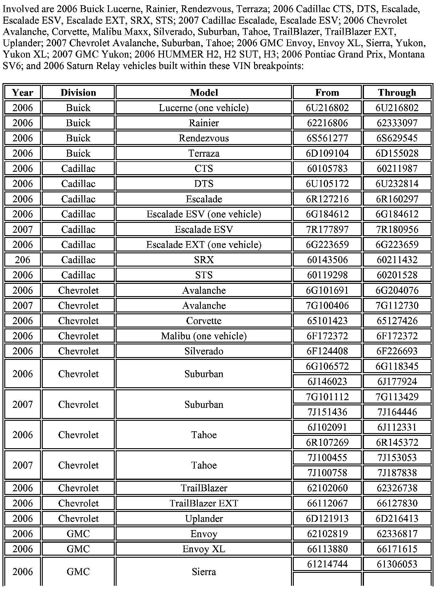
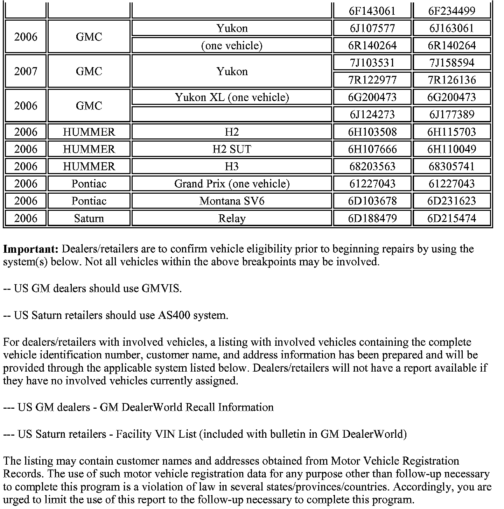
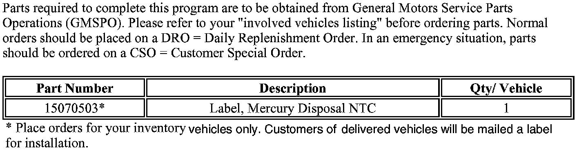
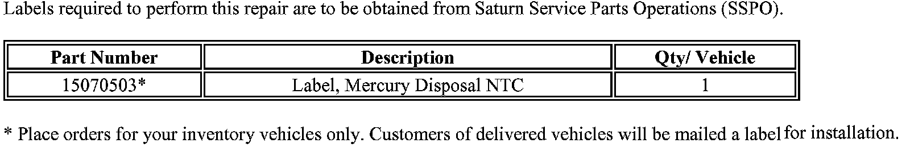
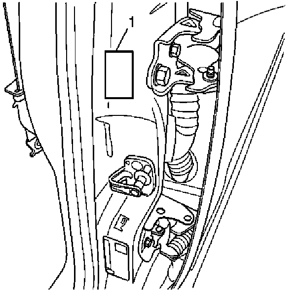
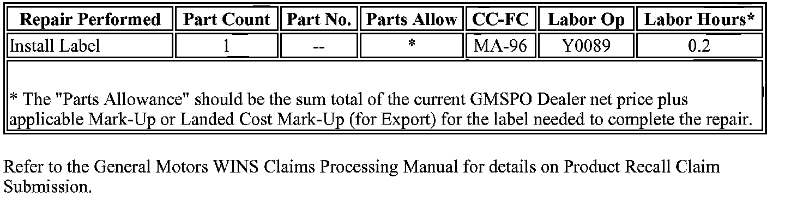
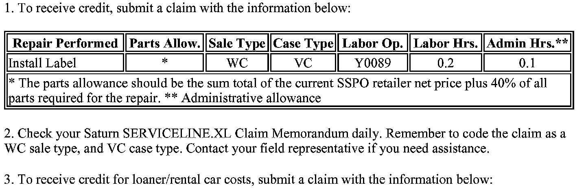

Campaign - Missing Mercury Disposal Notice Label: Overview
Subject:Customer Satisfaction - Missing Mercury Disposal Notice Label
# 06045 - (06/22/2006)
Models:
2006 Buick Lucerne, Rainier, Rendezvous, Terraza
2006 Cadillac CTS, DTS, Escalade, Escalade ESV, Escalade EXT, SRX, STS
2007 Cadillac Escalade, Escalade ESV
2006 Chevrolet Avalanche, Corvette, Malibu Maxx, Silverado, Suburban, Tahoe, TrailBlazer, TrailBlazer EXT, Uplander
2007 Chevrolet Avalanche, Suburban, Tahoe
2006 GMC Envoy, Envoy XL, Sierra, Yukon, Yukon XL
2007 GMC Yukon
2006 HUMMER H2, H2 SUT, H3
2006 Pontiac Grand Prix, Montana SV6
2006 Saturn Relay
********* THIS RECALL IS IN EFFECT UNTIL AUGUST 31, 2006 ************
Condition
Some 2006 Buick Lucerne, Rainier, Rendezvous, Terraza; 2006 Cadillac CTS, DTS, Escalade, Escalade ESV, Escalade EXT, SRX, STS; 2007 Cadillac Escalade, Escalade ESV; 2006 Chevrolet Avalanche, Corvette, Malibu Maxx, Silverado, Suburban, Tahoe, TrailBlazer, TrailBlazer EXT, Uplander; 2007 Chevrolet Avalanche, Suburban, Tahoe; 2006 GMC Envoy, Envoy XL, Sierra, Yukon, Yukon XL; 2007 GMC Yukon; 2006 HUMMER H2, H2 SUT, H3; 2006 Pontiac Grand Prix, Montana SV6; and 2006 Saturn Relay vehicles may have a condition in which the Mercury Disposal Notice Label was not included on the vehicle. This label contains instructions for the proper disposal of mercury-containing components installed on the vehicle.
Correction
Dealers/Retailers are to install a Mercury Disposal Notice Label on the driver's side door post. Since this label can easily be installed by the customer, and to reduce their inconvenience, labels and installation instructions will be mailed to customers of record. This program will expire on August 31, 2006.


Vehicles Involved

Parts Information - GM

Parts Information - Saturn
Service Procedure
1. Open the driver's door.

2. Locate the area where the label is to be affixed (1) and ensure that the area is clean and dry. Use a non-oil based cleaner, preferably isopropyl alcohol.
3. Remove the backing from the new label.
4. Apply the label and smooth the label from the center out.
5. Close the driver's door.
Claim Information - GM

Submit a Product claim with the information shown.

Claim Information - Saturn US
Customer Notification
General Motors will notify customers of this program on their vehicle (see copy of customer letter shown in this bulletin).
Dealer Program Responsibility
All unsold new vehicles in dealers' possession and subject to this program must be held and inspected/repaired per the service procedure of this program bulletin before customers take possession of these vehicles.
Dealers are to service all vehicles subject to this program at no charge to customers, regardless of mileage, age of vehicle, or ownership, through August 31, 2006.
Customers who have recently purchased vehicles sold from your vehicle inventory, and for which there is no customer information indicated on the dealer listing, are to be contacted by the dealer. Arrangements are to be made to make the required correction according to the instructions contained in this bulletin. A copy of the customer letter is shown in this bulletin for your use in contacting customers. Program follow-up cards should not be used for this purpose, since the customer may not as yet have received the notification letter.
In summary, whenever a vehicle subject to this program enters your vehicle inventory, or is in your dealership for service through August 31, 2006, you must take the steps necessary to be sure the program correction has been made before selling or releasing the vehicle.

Disclaimer